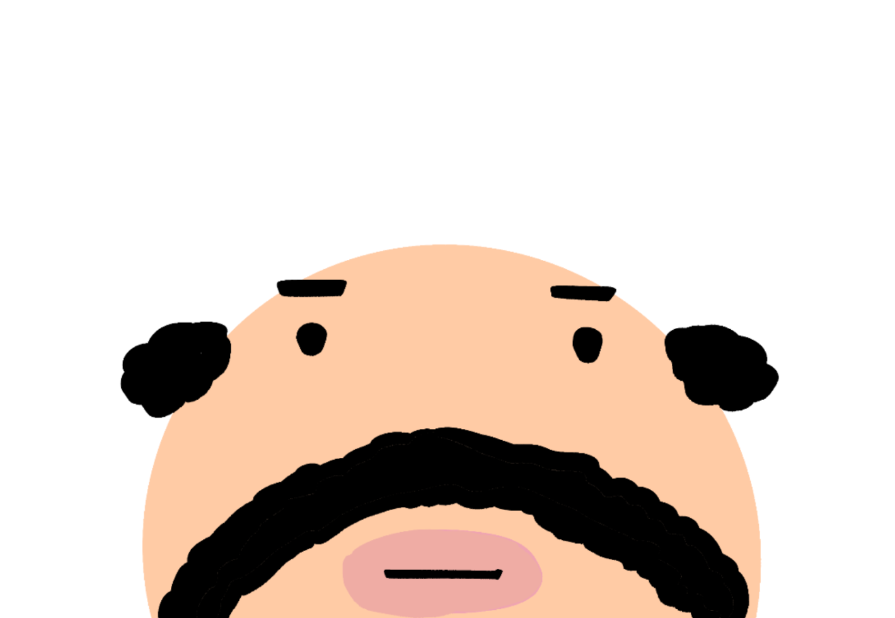

1997년 반다이의 게임 ‘신종발견! 다마고치’에서 처음 등장한 히든 캐릭터로,
일본어로 아저씨를 뜻하는 ‘오야지’에서 이름을 따왔다.
둥근 살구색 몸통에 곱슬거리는 머리카락 한 가닥, 까만 콧수염과 가느다란 다리가 특징이다. 귀여운 캐릭터들 사이에서
혼자 중년 아저씨의 모습을 하고 있는 독특한 외형이 눈길을 끈다.
엉뚱한 행동으로 웃음을 주다가도 때로는 인생의 연륜이 담긴 조언을 건네는 반전 매력의 소유자.
어딘가 촌스럽고 하찮지만 묘하게 정감 가는 모습으로,
최근에는 인형 키링과 파우치 등 다양한 굿즈로도 사랑받고 있다.
